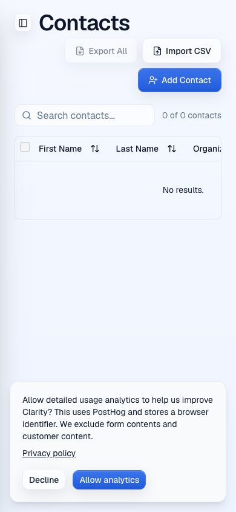
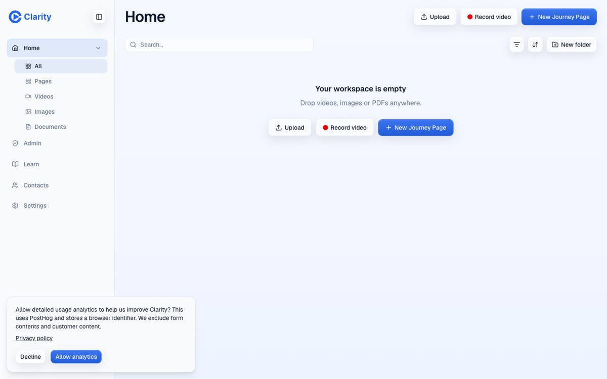
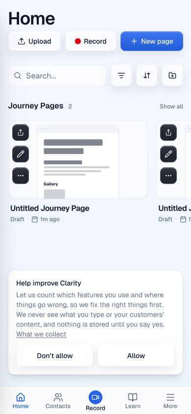
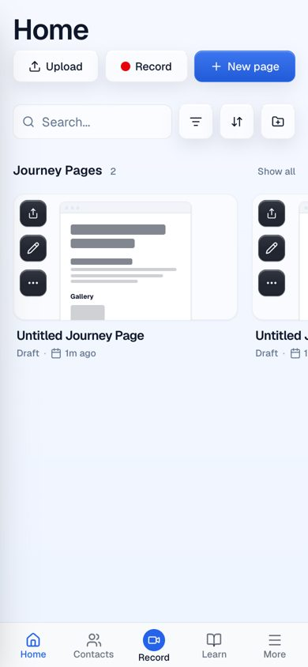
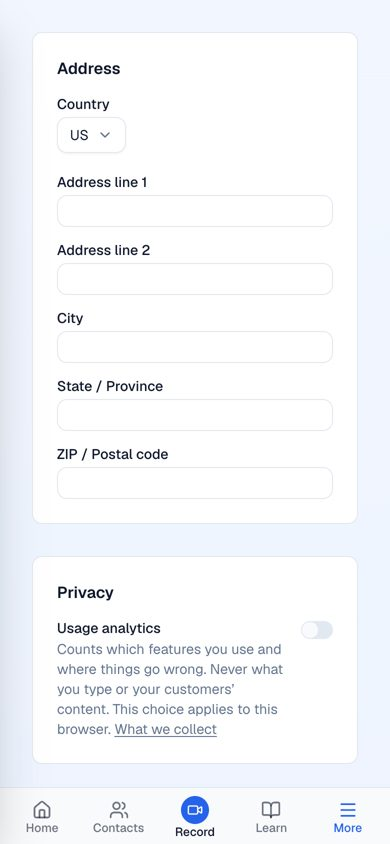
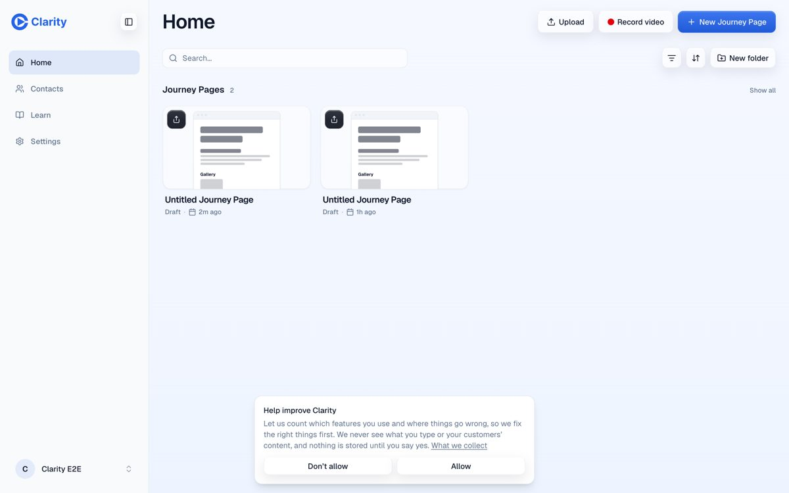

Consent band and folder actions
Pull request #953, preview at pr-953.clarity-video.workers.dev. Previews run with analytics switched off, so these screenshots stand in a dummy analytics config to show the band.
Analytics consent
Before, a card floated over the bottom of every page. On phones it covered the tab bar. It led with the vendor name, and "Allow analytics" was the filled button while "Decline" was outlined. UK and EU regulators call unequal buttons like that a dark pattern.


After, a compact card sits at the bottom centre. On phones it rides above the tab bar instead of covering it. "Don't allow" is on the left and "Allow" on the right, the same style and size. It's asked once, with no way to dismiss it without choosing. You change it later from a Privacy switch on Profile.
Help improve Clarity
Let us count which features you use and where things go wrong, so we fix the right things first. We never see what you type or your customers’ content, and nothing is stored until you say yes. What we collect
[Don’t allow] [Allow]




Folder rename and delete
The sidebar folder tree is now navigation only. Its rename and delete menu appeared only on hover, which phones don't have, and it duplicated the menu on the Home folder card. Phones already see that card menu. Its buttons grow from 26px to 40px on touch screens.